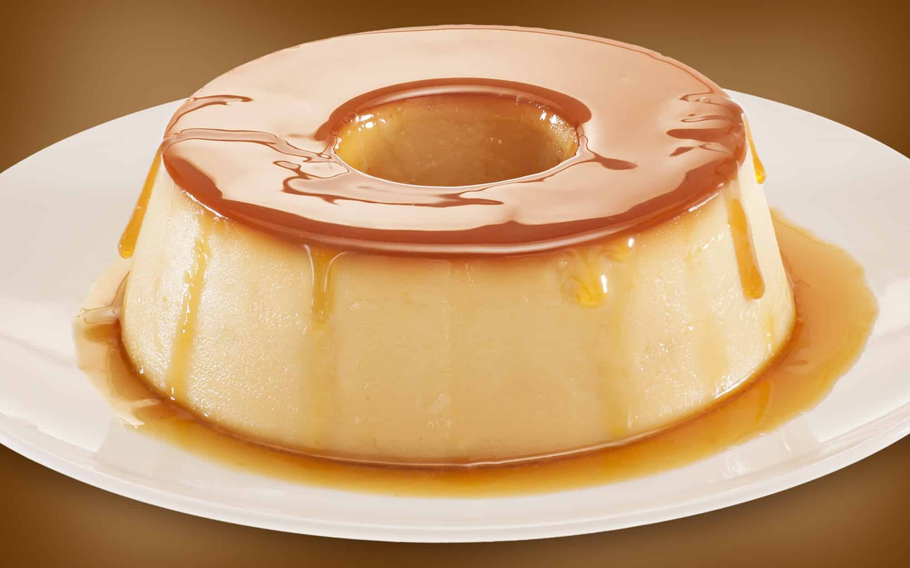

Receita 1
1 lata de leite condensado 1 lata de leite (medida da lata de leite condensado) 3 ovos inteiros. Derreta o açúcar na panela até ficar moreno, acrescente a água e deixe engrossar. Coloque em uma forma redonda e despeje a massa do pudim por cima. Asse em forno médio por 45 minutos, com a assadeira redonda dentro de uma maior com água. Espete um garfo para ver se está bem assado.
Receita 2

1 Cebola 1 colher de sopa de azeite de oliva 5 azeitonas verdes picadas 2 latas de molho de tomate pronto 2 Cubos de Caldo de carne ou legumes dissolvidos em 100ml de água 1 cenoura 2 tomates picados 500g de Macarrão 500g de Carne Moída Pique a cebola, refogue por alguns minutos em uma panela com óleo quente até dourar a cebola, mexendo para não queimar. Misture a carne moída, deixe cozinhar por alguns minutos. Adicione o caldo, o molho, os tomates picados, a cenoura cortada ao meio e mexa bem, deixe cozinhar por aproximadamente 40minutos em fogo baixo com a panela semi tampada. Descarte a cenoura depois que o molho estiver pronto. Prepare o macarrão, misture o molho ao macarrão e sirva. Acompanhamento Sugerido: Queijo Ralado
Receita 3

4 ovos 4 colheres (sopa) de chocolate em pó 2 colheres (sopa) de manteiga 3 xícaras (chá) de farinha de trigo 2 xícaras (chá) de açúcar 2 colheres (sopa) de fermento 1 xícara (chá) de leite Em um liquidificador adicione os ovos, o chocolate em pó, a manteiga, a farinha de trigo, o açúcar e o leite, depois bata por 5 minutos. Adicione o fermento e misture com uma espátula delicadamente. Em uma forma untada, despeje a massa e asse em forno médio (180 ºC) preaquecido por cerca de 40 minutos. Não se esqueça de usar uma forma alta para essa receita: como leva duas colheres de fermento, ela cresce bastante! Outra solução pode ser colocar apenas uma colher de fermento e manter a sua receita em uma forma pequena.